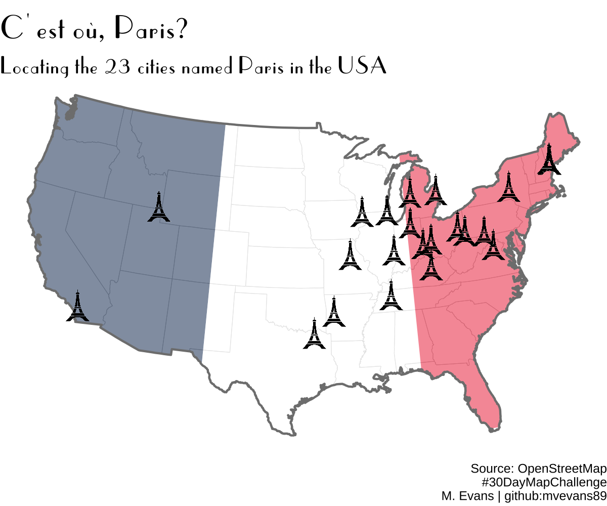

Day 8 of the #30DayMapChallenge - OpenStreetMap
Day 7 of the #30DayMapChallenge - Raster
Day 5 of the #30DayMapChallenge - Ukraine
Day 4 of the #30DayMapChallenge - Something Green
Day 3 of the #30DayMapChallenge - Polygons
Day 2 of the #30DayMapChallenge - Lines

Day 1 of the #30DayMapChallenge - Points
How to add zeros (or other characters) to the front of a string vector
How to create dummy variables within a dataframe
Several options for applying functions with multiple arguments taken from rows of a dataset
Why labels plot over each other and how to avoid it
How to apply aggregate functions that ‘roll’ across data
A new package to let you know what R packages you use the most
Using pipes with dplyr and ggplot2